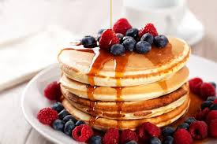
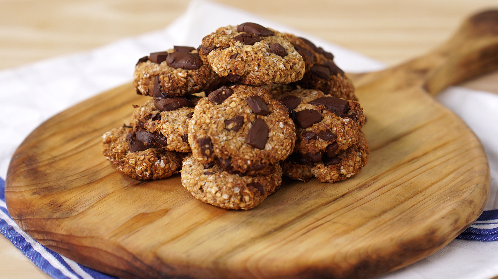
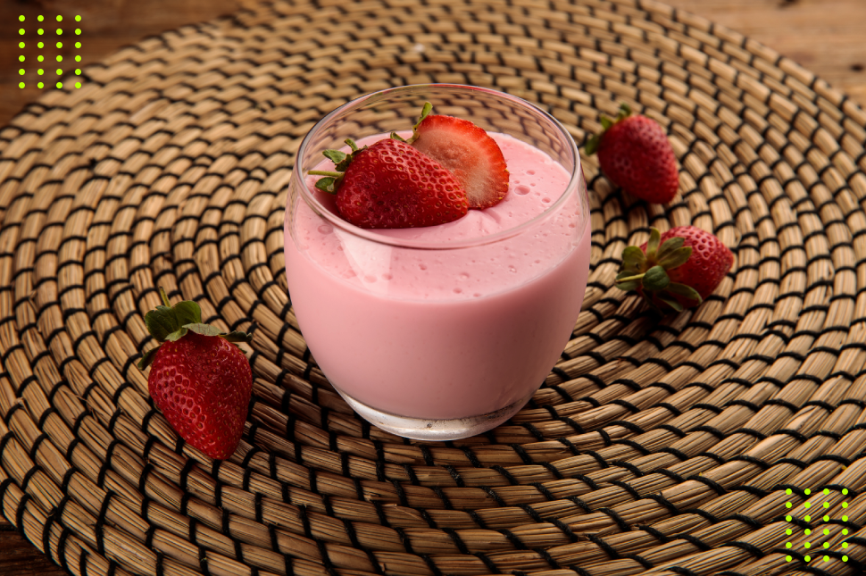
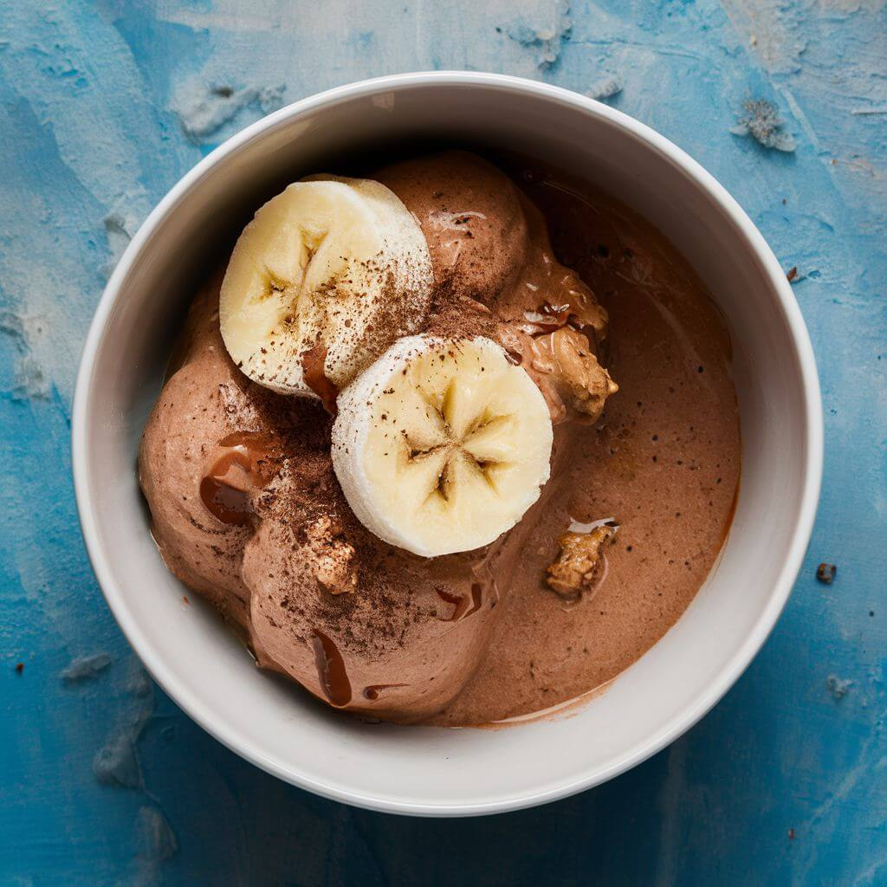

Ingredientes:
- banana madura (quanto mais madura, mais docinha a panqueca fica)
- 1 ovo
- 1 pitada de canela em pó (opcional)
- Fio de azeite ou óleo de coco para untar a frigideira
Modo de preparo
Amasse a banana: Em um prato fundo, amasse bem a banana com um garfo até virar um purê. Misture os ingredientes: Adicione o ovo e bata bem com o garfo. Em seguida, acrescente a aveia e a canela, misturando até formar uma massa homogênea. Aqueça a frigideira: Leve uma frigideira antiaderente ao fogo baixo e unte com um pouquinho de azeite ou óleo de coco. Grelhe a massa: Despeje a massa na frigideira (você pode fazer mini panquecas ou uma maior). Quando começarem a aparecer pequenas bolhas na superfície e a base estiver dourada, vire com uma espátula. Finalize: Deixe dourar do outro lado por mais um minuto e pronto! Dica de ouro: Você pode servir com frutas picadas por cima (como morango ou mirtilo), um fio de mel ou uma colher de pasta de amendoim integral.
Ingredientes:
- 2 bananas grandes bem maduras
- 1 xícara de aveia em flocos
- 3 colheres de sopa de gotas de chocolate amargo (ou chocolate 70% picadinho)
Modo de Preparo 1. Em uma tigela, amasse muito bem as bananas com um garfo até virarem uma pasta. 2. Adicione a aveia em flocos e misture bem até que a aveia absorva a umidade da banana. 3. Incorpore as gotas de chocolate à massa. 4. Com a ajuda de uma colher, faça pequenas porções da massa e coloque-as em uma assadeira forrada com papel manteiga ou untada. Use as costas da colher para moldar o formato de cookie (eles não crescem nem espalham no forno). 5. Leve ao forno preaquecido a 180°C por cerca de 15 a 20 minutos, ou até que o fundo dos cookies esteja dourado. Deixe esfriar para que fiquem mais firmes por fora. Dica: Para os cookies, você também pode adicionar uma pitada de canela ou substituir o chocolate por uvas passas ou castanhas picadas!

Danoninho Caseiro SaudávelIngredientes:
- 200g de morango congelado
- 2 bananas maduras
- 1 inhame médio descascado e picado
- 1 colher de sopa de suco de limão
Modo de Preparo Cozinhe o inhame: Coloque o inhame picado em uma panela com água e cozinhe até que ele fique bem macio (espetando facilmente com um garfo). Escorra a água e espere amornar. Bata tudo: No liquidificador ou processador, coloque o inhame cozido, os morangos, as bananas e o suco de limão. Consiga a consistência: Bata muito bem por cerca de 3 a 5 minutos, até se transformar em um creme completamente liso, rosa e sem nenhum pedacinho. Gele: Distribua o creme em potinhos individuais e leve à geladeira por, pelo menos, 2 horas para ganhar consistência e ficar bem fresquinho.

Sorvete de banana e cacau4 bananas maduras (quanto mais maduras, mais docinho fica)
2 colheres de sopa de cacau em pó 100% (ou chocolate em pó 50%)
1 colher de chá de extrato de baunilha (opcional)
Um pouquinho de leite (seja de vaca ou vegetal) só para ajudar a bater, se necessário
Modo de preparo 1. Prepare as bananas: Descasque as bananas, corte-as em rodelas e coloque em um pote ou saco próprio para congelamento. Deixe no freezer por pelo menos 4 horas (ou de um dia para o outro). 2. Bata no processador: Coloque as rodelas de banana congeladas no processador de alimentos ou em um liquidificador potente. 3. Adicione o sabor: Comece a bater. No início vai parecer que vai virar uma farofa, mas continue batendo. Quando começar a amaciar, adicione o cacau em pó e a baunilha. 4. Acerte o ponto: Se o seu aparelho estiver sofrendo para bater, adicione 1 ou 2 colheres de sopa de leite para ajudar a girar. Bata até virar um creme liso e brilhante. 5. Sirva imediatamente: A consistência fica igual à de um sorvete de máquina!
